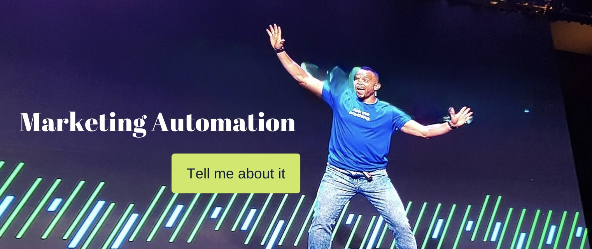
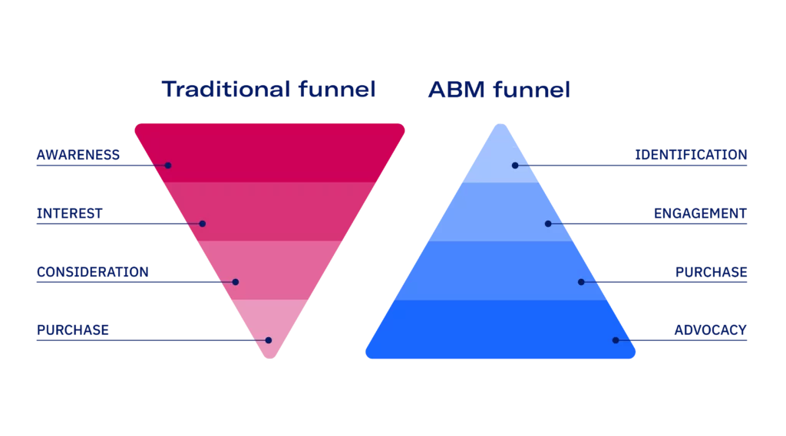

Digital Marketing expert with a flair for strategy and a background in Swedish engineering. I bridge the gap between creative marketing and technical execution.
Connect on LinkedInI specialize in building automated growth engines using:


My methodology flips the traditional funnel upside down to focus on high-value targets:
1. Identification | 2. Engagement | 3. Purchase | 4. Advocacy
The Ninja Manual